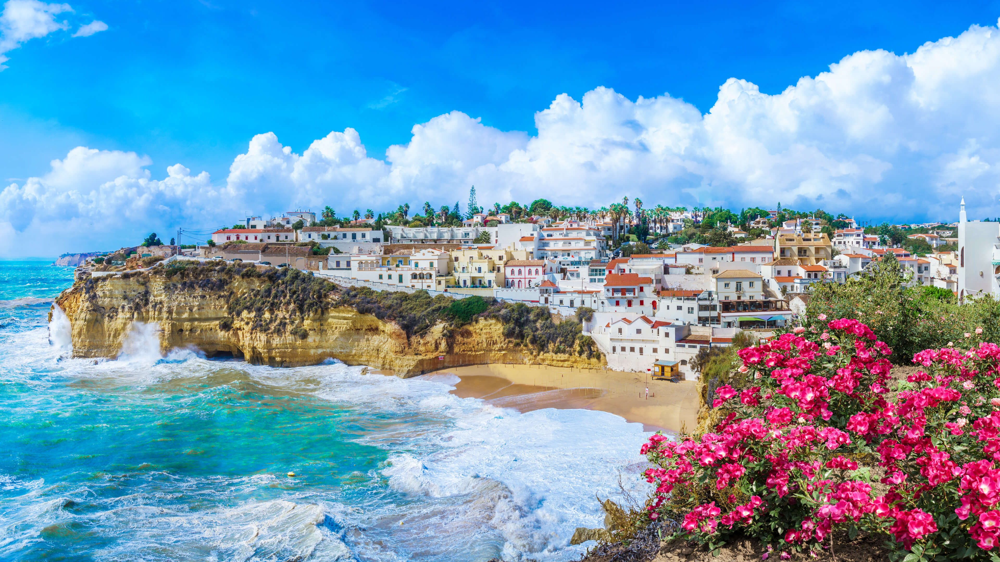
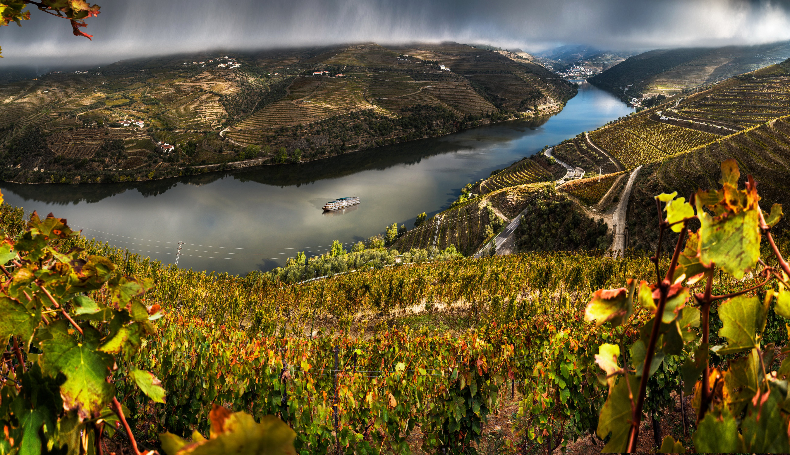
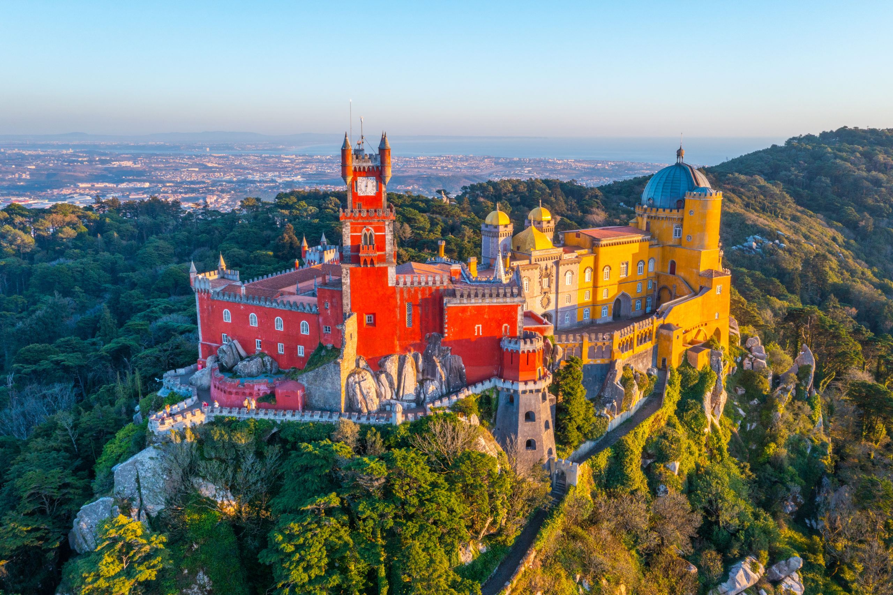
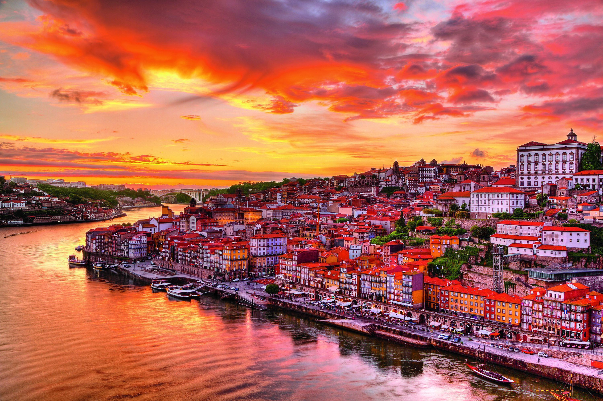
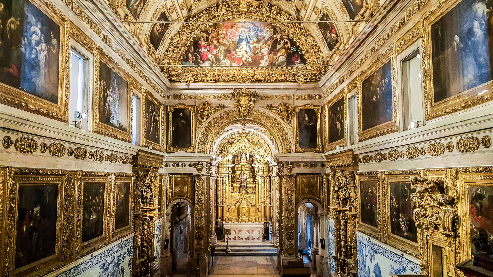
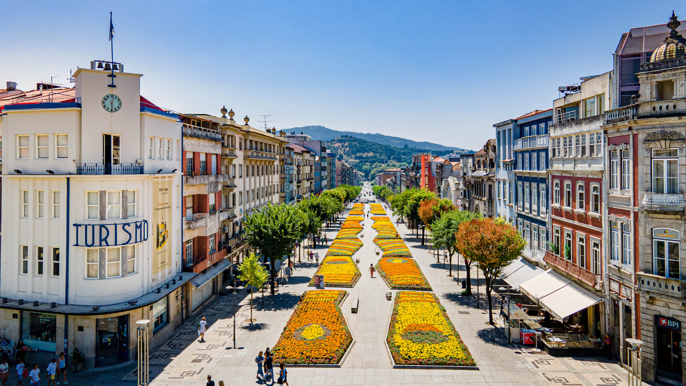
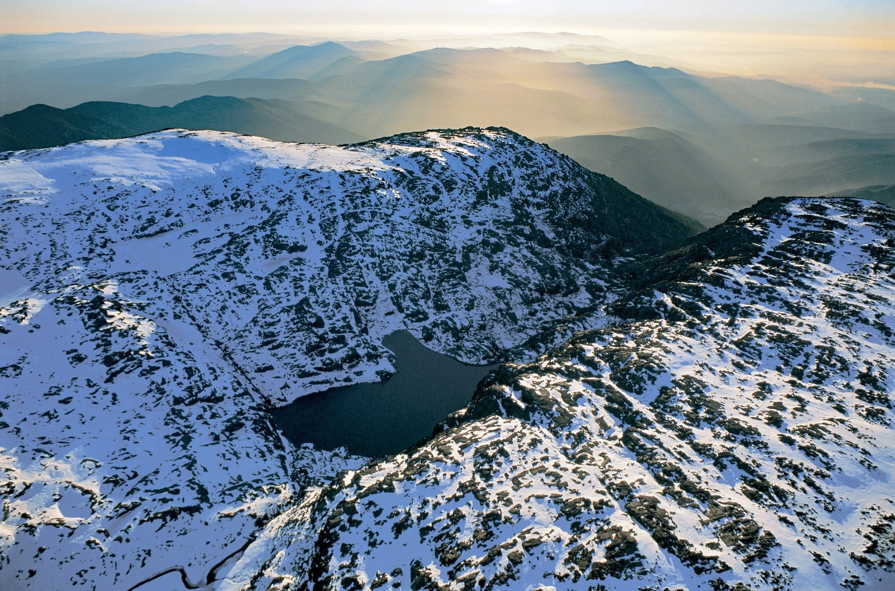

Highlights
Popular Destinations









Portugal reveals itself as a land of timeless rhythm and radiant spirit. Cobblestone lanes lead to sun-warmed plazas where the scent of baked bread mingles with ocean air. Its charm lies in the harmony between past and present, where age-old traditions find new life through art, music, and innovation. Every village, vineyard, and shore carries the warmth of a country deeply connected to its roots.
Imagine the glow of sunset over tiled facades, the echo of Fado drifting through narrow alleys, and waves breaking against ancient stone walls. Olive groves shimmer in the distance while church bells mark the slow passing of time. Portugal moves at its own pace, inviting travelers to linger, listen, and feel the quiet poetry of its soul.
Golden light spills across tiled rooftops as the sound of church bells drifts through narrow streets. The aroma of fresh bread and roasted chestnuts fills the air, mingling with the distant hum of the sea. Each morning begins unhurried, shaped by ritual, warmth, and the quiet grace of daily life.
As the day unfolds, layers of history and heart emerge in small moments. You might taste wine among vineyard hills, watch craftsmen paint azulejos by hand, or listen to music that stirs memory and longing. Hospitality feels effortless, expressed through kindness and shared stories.
Stone streets wind through hillside towns where sunlight dances across mosaic tiles and whitewashed walls. Fishing boats sway in calm harbors, and the aroma of grilled sardines mingles with sea air. Each day unfolds with an easy rhythm, guided by tradition, flavor, and a quiet pride in life's simple beauty.
Explore lively markets, seaside boutiques, and family-run workshops where Portuguese craftsmanship flourishes. Bring home hand-painted azulejos, fine cork goods, embroidered linens, or ceramics.
Taste Portugal's rich culinary heritage through dishes like bacalhau, grilled sardines, and savory caldo verde. Every plate celebrates freshness, tradition, and the simple pleasure of sharing good food.
Start your day with a bica, Portugal's strong espresso, or sip vinho verde as the afternoon light softens over the hills. End the evening with a glass of port or ginjinha.
Traveling across Portugal is easy and scenic, with high-speed trains, intercity buses, and coastal ferries connecting its diverse regions.
Urban travel is straightforward with trams, metros, and taxis running regularly throughout major cities. Walking or riding a tuk-tuk through narrow streets offers an authentic view of Portuguese life.
Venture beyond the cities to uncover Portugal's peaceful landscapes. Drive along winding coastal roads, explore medieval villages perched on hilltops, or hike through national parks filled with olive groves and cork trees.
Western European Time (WET), which aligns with GMT, and observes daylight saving time from late March to late October. The Azores Islands are one hour behind mainland Portugal.
Ride-sharing services like Uber operate in major cities alongside reliable local taxis. Booking through official apps or stands ensures safe travel and fair pricing.
Portugal uses 230V electricity with a frequency of 50Hz. Plug types C and F are standard, so travelers from other regions may need an adapter.
Portugal enjoys a Mediterranean climate with long, sunny summers and mild, rainy winters. Coastal areas stay pleasant year-round, while inland regions experience warmer temperatures.
Portugal's diverse landscapes have set the scene for films like The Ninth Gate, On Her Majesty's Secret Service, and Night Train to Lisbon. The country has produced renowned talents such as director Manoel de Oliveira, actress Daniela Ruah, and football legend Cristiano Ronaldo.
Emergency Services: 112
Police: 112
Medical Emergency: 112
Fire Brigade: 112
Country Code: +351






